Comment elle marche, à quoi elle ressemble, ce qu'elle vaut — livret d'audit ETUDE-FICHE-1 · 12/11/2026 · lecture seule.
Les détails de code sont dans la fiche ETUDE-FAISABILITE.md. Ce livret s'adresse à un lecteur non technique.
Comment ça marche (en dix lignes)
Vous choisissez 1 à 8 parcelles contiguës : LABUSE les fusionne en une seule « assiette ».
Vous choisissez un type de projet : résidence étudiante, senior, logement social, ou lotissement.
Vous composez votre programme (T1, T2, T3, T4) et le stationnement (aérien ou sous-sol).
Vous cliquez « Analyser » — le calcul tourne quelques dizaines de secondes.
LABUSE lit les règles du PLU (reculs, hauteur, emprise, perméabilité, stationnement, mixité) et les contraintes (PPR…).
Il retire les reculs et le PPR rouge de l'assiette → il reste une « zone d'implantation ».
Il dessine une ou deux barres de bâtiment (profondeur fixe 13 m), empile des niveaux, pose le parking et un accès.
Il découpe la barre en logements, compte les places imposées, mesure emprise et hauteur.
Il confronte le dessin aux règles : chaque contrôle est Réussi / Échoué / À confirmer / Non effectué / Non applicable.
Il affiche un plan masse, une coupe, un tableau réglementaire vs projet, un verdict, et un PDF.
La boussole : LABUSE ne cherche pas à remplir la parcelle comme un architecte. Il pose une forme simple et prudente (barre de 13 m), tout stationnement aérien par défaut, et soustrait le risque (PPR). Résultat : il sous-estime les logements d'un collectif et surestime un peu un lotissement.
Le parcours, écran par écran
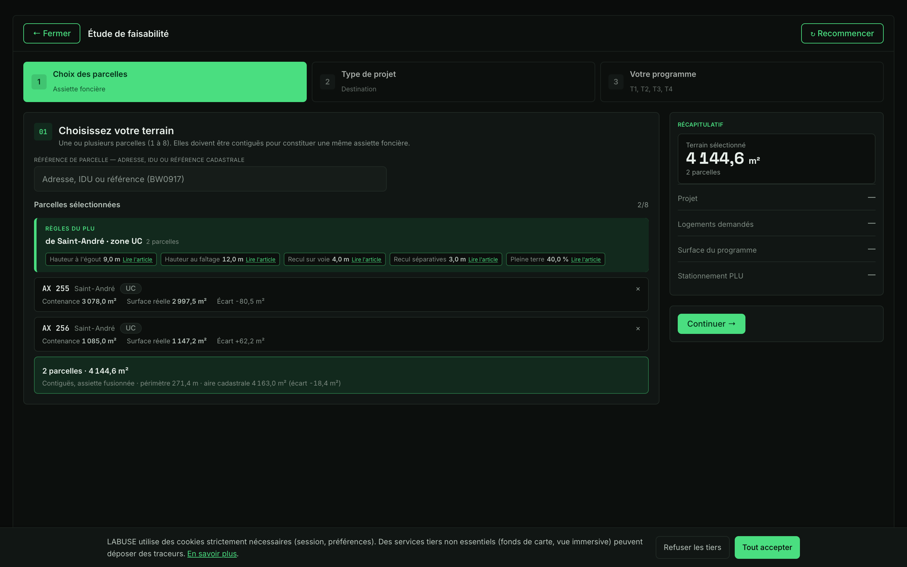
① Choix des parcelles — contenance, zone PLU, règles de l'assiette et contiguïté (bloquante).
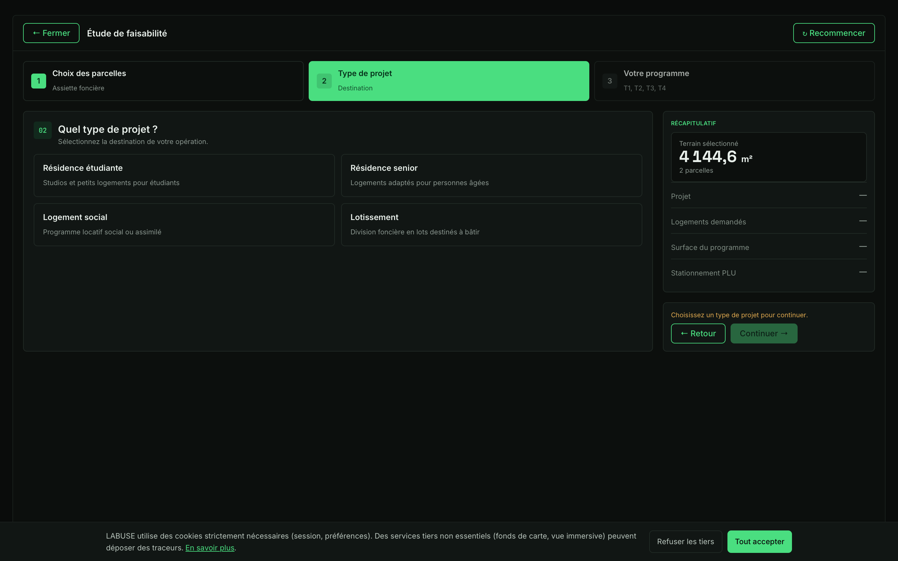
② Les quatre types de projet.
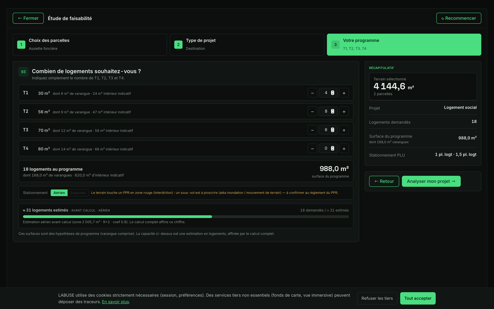
③ Composition du programme (T1–T4), stationnement, et jauge « ≈ N logements » avant calcul.
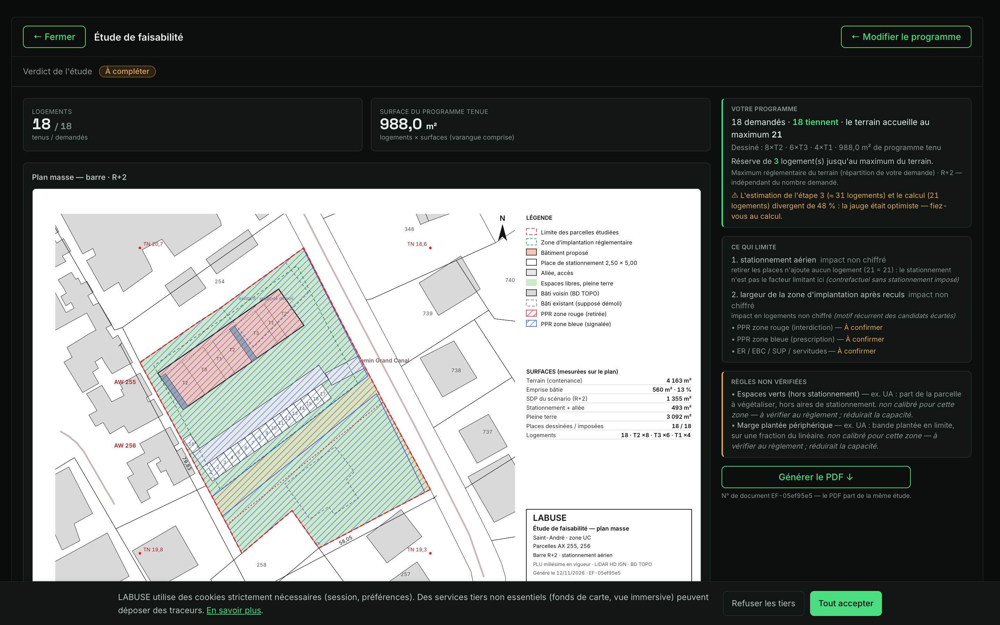
⑤ Résultat : plan masse, surfaces, « ce qui limite », contrôles, bouton PDF (Saint-André, logement social, aérien).
Les quatre types de projet
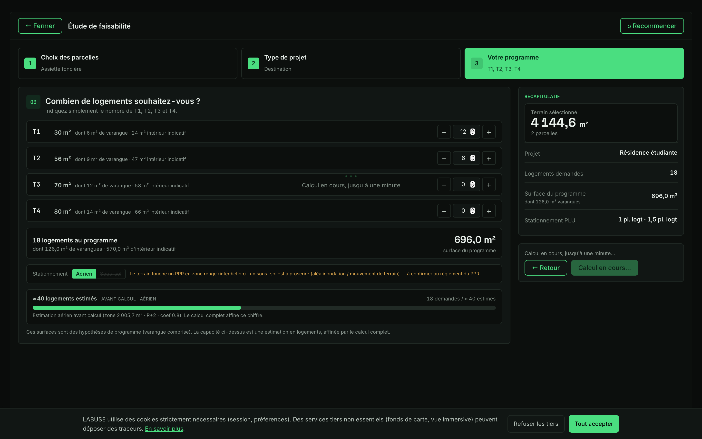
Résidence étudiante (aérien).
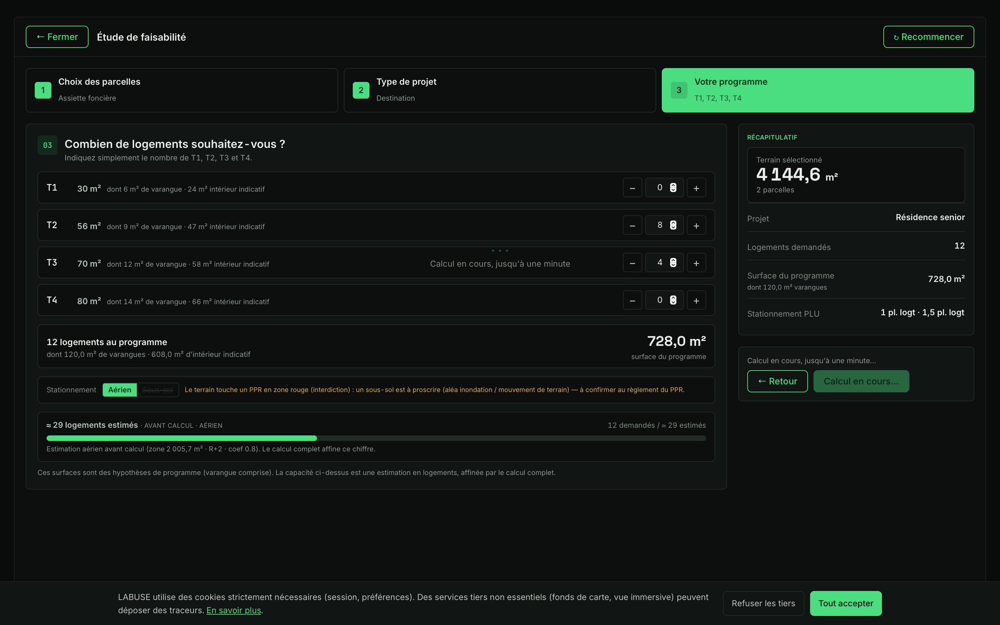
Résidence senior (aérien).
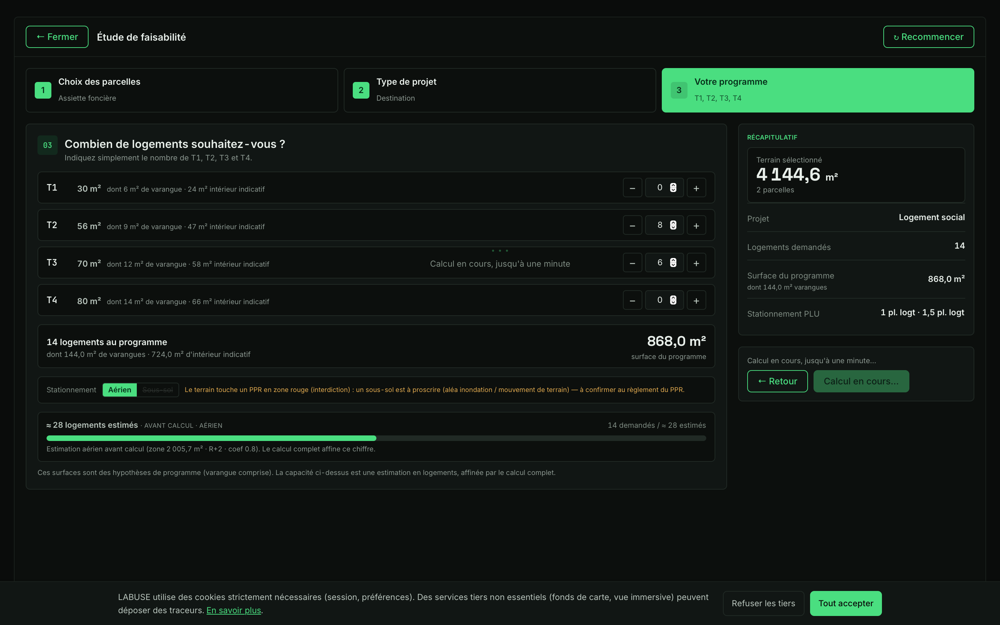
Logement social (aérien).
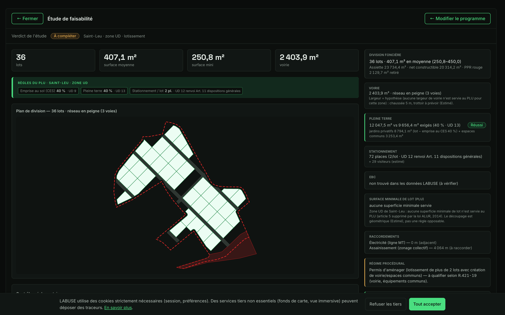
Lotissement (Saint-Leu) — plan de division en lots, réseau de voirie en peigne.
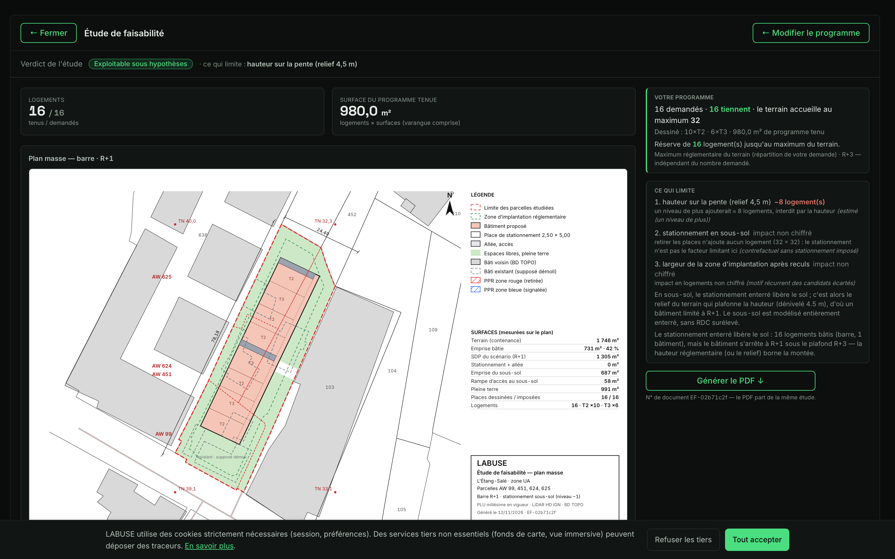
Stationnement en sous-sol (Étang-Salé) — le parking enterré libère le sol pour plus de logements.
Les cas limites
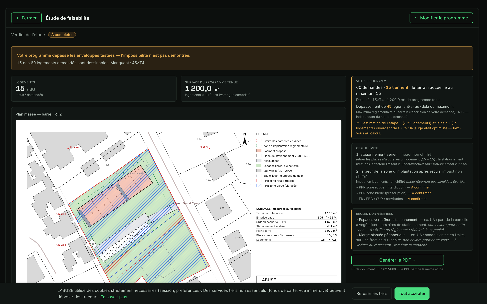
Programme qui dépasse la capacité : 15 des 60 logements demandés sont dessinables, « manquent 45 ». L'impossibilité n'est pas affirmée.
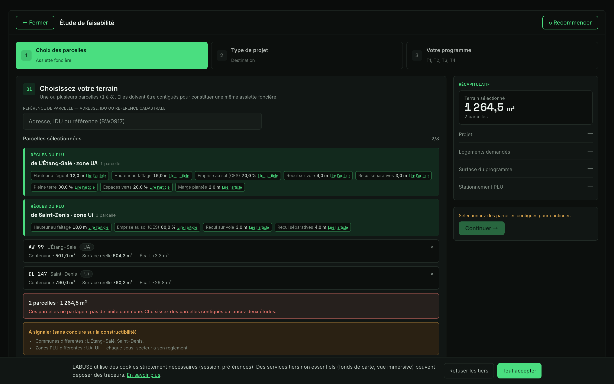
Parcelles non contiguës (communes différentes) : l'assiette est refusée dès l'étape 1.
Le PDF généré
Le PDF reprend exactement les mêmes chiffres que l'écran (un verrou automatique l'interdit d'afficher un nombre absent du calcul). Dix pages : synthèse, terrain, règles, enveloppe, plan masse, distribution & coupe, capacité & contrôles, hypothèses, annexe règlement.
Page 5 — plan masse dessiné et tableau des surfaces (chaque nombre étiqueté « Estimé » ou « Dérivé »).
Deux réserves mesurées. (1) Le PDF recalcule le projet dans son propre processus ; comme le calcul est borné en temps, un PDF rendu sur une machine plus lente peut afficher un projet plus petit que l'écran (observé : 14 logements R+1 au lieu de 18 R+2). (2) Sur le poste d'audit, le bouton PDF échouait (erreur technique d'imbrication de processus) — le PDF de ce livret a été rendu en direct ; à vérifier en production.
Comparaison aux quatre études d'architectes
On a rejoué l'Étude sur les mêmes parcelles et le même programme que quatre études capacitaires d'architecte réelles (La Réunion). Verdict d'ensemble : LABUSE sous-estime les grands collectifs et surestime un peu le lotissement.
Cas
Type
LABUSE
Architecte
Ratio
Étang-Salé (UA, 1 746 m²)
collectif
28 logts · 30 pl · R+3
29 logts · 31 pl · R+3
0,97
Saint-André (UC, 4 163 m²)
collectif
18 logts · 27 pl · R+2
48 logts · 48 pl · R+2
0,38
Saint-Denis RPA (Ui, 1 580 m², PPR)
senior
12 logts · 12 pl · R+3
22 logts · 8 pl · ~R+3
0,55
Saint-Leu (UD)
lotissement
36 lots
30 lots
1,20
Pourquoi ces écarts
Forme bâtie : une ou deux barres de 13 m sur la seule zone après reculs — LABUSE ne remplit pas la parcelle comme un architecte (cause principale, Saint-André ×2,7).
Stationnement 100 % aérien par défaut : il mange l'assiette ; l'architecte enterre (Étang-Salé : parité à ±1 car l'écart vient de là).
Prise en compte du PPR (rouge + bleue), absente des plans d'architecte : décisif à Saint-André (zone d'implantation 2 006 m² sur 4 163) et Saint-Denis.
Barème de stationnement au pied de la lettre : ignore la dérogation RPA 1 place/3 logements → LABUSE affiche plus de places que l'architecte.
Hauteurs réglementaires strictes — mais concordantes avec l'architecte dans les trois cas.
Lotissement : pavage déterministe au lot de 450 m² sans desserte/pente réelle → plus de lots.
Note : la parcelle AC0263 (Saint-Leu) est absente de la base LABUSE ; le rejeu lotissement a porté sur 3 parcelles. Détail complet : COMPARAISON-ARCHITECTES.md.
Les limites — ce qui n'est jamais contrôlé
Même quand la règle existe, LABUSE ne vérifie pas : le prospect (hauteur relative, toujours « À confirmer »), l'accessibilité PMR, les locaux vélos, le stationnement visiteurs détaillé, la gestion des eaux pluviales, la pente / géotechnique réelle (lue mais terrain dessiné plat), les destinations (commerces, bureaux — il ne dessine que du logement), l'intégration paysagère / ABF, et toute dérogation locale au barème de stationnement. Le terrain est supposé nu : rien n'est déduit pour un bâti existant.
Mes doutes (par gravité)
Peut tromper un promoteur
Résultat non reproductible. Le calcul est borné en temps : la même parcelle donne 14 logements R+1 (machine lente/froide) ou 18 logements R+2 (calcul complet). Deux chiffres possibles, et un PDF qui peut contredire l'écran. le plus grave
Sous-estimation des collectifs (0,38–0,55× l'architecte) : risque d'écarter une parcelle rentable.
Stationnement surestimé : ignore la dérogation RPA (1 place/3 logts) → 12 places au lieu de 8.
Terrain supposé nu : sur une parcelle bâtie, le chiffre affiché n'est pas un potentiel net.
Fait désordre
Lotissement surdimensionné (36 vs 30 lots) : pavage sans minimum de lot ni desserte réelle.
Pente lue mais terrain dessiné plat : « relief 4,5 m » annoncé comme facteur limitant d'un dessin plat.
Prospect jamais chiffré : « À confirmer » systématique bloque le verdict « Exploitable ».
Le PDF peut échouer en production (erreur d'imbrication de processus observée) ; « emprise mobilisable » calculée sur la zone dessinée, pas la contenance.
Sans conséquence
La parcelle AC0263 est absente de la base (lacune de donnée).
Sur une très grosse assiette, le budget de 22 s peut rendre « simulation impossible » (rare, relançable).
Audit ETUDE-FICHE-1 · branche audit/etude-fiche-1 · tout décrit le code réellement exécuté les 11–12/11/2026 ; ce qui n'a pas pu être vérifié est signalé comme tel.